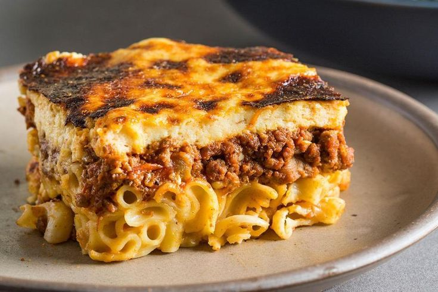

a baked pasta dish layered with ground meat and a rich creamy sauce.
It consists of layers of penne pasta, a spiced ground meat filling (with onions and sometimes tomato paste), and a thick layer of creamy béchamel sauce on top, baked until golden brown.